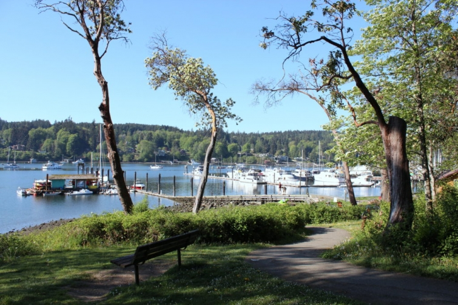
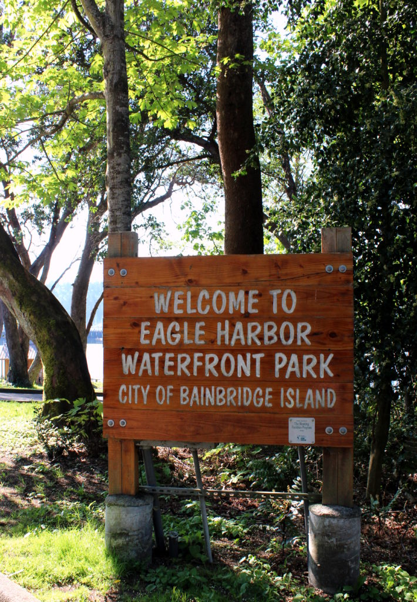

.png)
.PNG)
.PNG)
.PNG)
.PNG)
.PNG)
.JPG)
.JPG)
.PNG)
.PNG)


This is beautiful Eagle Harbor on Bainbridge Island, Washington. Wouldn’t you like to be sitting on that bench there enjoying the sunshine and that view??
Sooo very peaceful…
We spent a morning following that trail as it wandered though the park….
past the waterfront…. and in and out of neighborhoods with cute homes.
and in and out of neighborhoods with cute homes.
Doesn’t this little stone one remind you of Iris’ cottage in The Holiday? 🙂
My photo does not do this next lovely shingled one justice.
It even had a free library by its driveway.
(I thought that was wonderful!)
A little further down the road was this one…
and then this one.
The landscaping with stones out front was beautiful.
And just look at the natural landscaping here.
You’d never have to mow the lawn!
The waterfront path took us past community vegetable gardens. Everything was so lush and green there. It is obvious they get a lot of rain in that area of the country.
Walking on, we came to this charming church…
and then…this cottage with its very cute flowerbed.
It was located right next to The Eagle Harbor Inn, the inn where we were staying. 🙂
This was the gorgeous view from the inn.
(Obviously it is located right next to the waterfront,
and that is their boat you see there in the middle.)
The inn has kind of a different set-up. It is a series of buildings around a few small courtyards.
There is no “front desk” for you to check in. You make your reservation, and they send you information on how to get into your room using a key pad entry when it is time for you to arrive.
And although there is no real office for the inn, there is a small common area with supplies for coffee.
My husband, our son, and I stayed in the spacious Harbor suite.
How do you like the model ships on the headboard?
I thought they were a unique accent for a room in an inn,
(but quite fitting for an inn by a harbor. 🙂 )
The sofa folds out into a sofa bed, and extra linens are kept in the trunk there.
The bathroom was also large (although I could not find an angle that would work for photographing the entire room. 🙁 ) The shower was a generous size.
And that is almost all I have time to share with you today. Before we take off exploring the Olympic Peninsula, I do have one more post about two neat places we toured on Bainbridge Island. So I will leave you with a sneak peek of them.
(They really were pretty, and I think you are going to love seeing them. 🙂 )
And because it is Father’s Day I am going to leave you with something entirely for my father. He loves classical music and bluegrass (and his brother worked for the railroad!) so I think he will enjoy this piece of music. I hope it keeps your toes tapping! 🙂
Until next time…


.PNG)
I just now spotted this post on your travel talk so, of course, I have another comment. Your accommodations were kitty-corner from my hubby’s office. Did you happen to notice Fairbank Construction? Small world!
——————————————————————–
Oh my goodness. Definitely a small world! I believe Fairbank’s office was right up the street towards town – near the Gelato place. I just loved Bainbridge Island. You are in such a wonderful part of our country!
Kelly
Always wanted to go to Bainbridge Island….I know someone who used to have a B&B and antique shop on the island….so gorgeous!
———————————————————————
You should go Shirley! How fun to own both of those, and how great that they were in such a beautiful place!
Kelly
Kelly,
You always stay at the neatest places. I love exploring with you via e-trip. Thanks for sharing! Take care.
———————————————————————-
Thank you for coming along with us (virtually of course) Dawn. I usually do a ton of research to find good places to stay. (Although we have an upcoming trip where we are just “Holiday Inn-ing” it all the way soon.)
Thanks for reading!
Kelly
Kelly,
The Inn looks lovely. If we ever need a place to stay during one of our visits, I’ll definitely plan on staying there. Linda always has us stay with her and Tom, which is very nice.
I took pictures of 2 of the houses you’ve shared. The house fronts are what caught my eye. Such a beautiful feel to the houses on the island.
xo,
Karen
———————————————————————-
How wonderful that you have friends to stay with there, and that is so funny that you had photographed 2 of the houses! Great minds think alike. 🙂
Kelly
So pretty! The homes were gorgeous and I can just imagine the beautiful gardens in their climate. 🙂 There’s nothing like a harbor shot with boats on the water. So so lovely!! Looks like a fun trip. 🙂
——————————————————————–
It was a fun trip! And the gardens were beyond beautiful. If you like gardens Gina, you will love the next post. 🙂
Kelly
Even the name has a special ring to it! Looks like its a very peaceful place to visit/live!
The stone cottage is adorable!
——————————————————————-
Yes, it does! Our son preferred the “nature” leg of our trip (coming up soon) but I really really liked Bainbridge. I think we would all like to have a stone cottage like that one.
Kelly
This could so be my happy place! Loved the music… Listened to it as is enjoying your blog!
——————————————————————–
It could be mine too Cindy! I’m happy you enjoyed the music on the post. Not quite my normal Piano Guys selection but a fun piece to listen to. 🙂
Kelly
So enjoyed that song! And, I am loving this trip! Thanks for the tour…cute homes. And everything is so lush! 😉
——————————————————————–
I’m so glad you did Donnamae! Wish we could have taken all of you along with us on the trip. You should make a trip to the island and see it in person. 🙂
Kelly
That was FABULOUS!!! I just loved the music and the homes. I’ve never been that far up the west coast, but through your eyes and lens and words, I enjoyed the ride! Glad all had a Happy Father’s Day, and Happy Summer!!!
———————————————————————
I’m so glad you loved it Mari! That piece of music is such a fun one. 🙂
Happy Summer to you too!
Kelly
We never got to Bainbridge Island when we were there but it looks gorgeous. When our daughter rented a small home in Fayetteville,NC her neighbor had one of those library houses and our granddaughter would get books there. Such a cute idea. There is a web site on them. Have a good time while there.
——————————————————————–
How fun for your granddaughter Cheri! I will look for that website. Thanks for the info on it!
Kelly
Absolutely lovely and totally relaxing, I would think! And to finish with The Orange Blossom Special . . . always a good time on your blog!
————————————————————————
Of course Bainbridge and The Orange Blossom Special were totally unrelated, but I just had to get that musical performance in for Father’s Day – travel post or not. 🙂 I am glad you appreciate the variety of cultural experiences here at Talk of the House, Leslie Anne. LOL
Thanks for dropping by to visit!
Kelly
That stone cottage is the house of my dreams! Might have to make a wall poster from that photo! Am so enjoying your trip! Almost as good as going, myself… Almost. :-/
——————————————————————-
Wasn’t that one just precious?! I am glad you are enjoying the posts about the trip Ruth. More to come (and there is a MAJOR cute village for you to see after we explore the Olympic Peninsula…made me want to move there!)
Have a great week!
Kelly